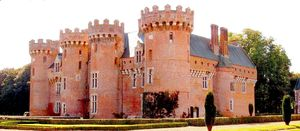
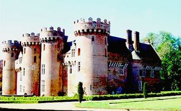
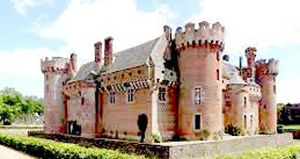
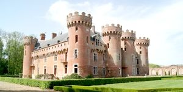
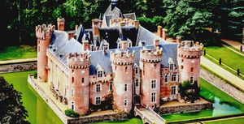
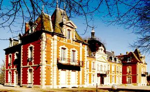
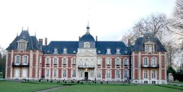

Recensement Jean-Claude Truffet
| Département | 28 — Eure-et-Loir |
| Canton | Chartres |
| Commune | Villebon |
| Type d'édifice | Forteresse |
| Période d'origine | XIV-XVI |
| Coordonnées GPS | 48° 23' 27" Nord, 1° 12' 25" Est |







VILLEBON, construit pour Jeannet d'Estouteville. Au XVIIe siècle, Sully, a reçu la visite de plusieurs rois : Charles VI, Louis XI, François Ier et Henri IV, Stanislas Leczinski, Paul Deschanel, le Général de Gaulle et Valéry Giscard d'Estaing. Le château de Villebon sert aujourd'hui d'habitation mais accepte les visiteurs, fut la demeure où Maximilien de Béthune, duc de Sully décéda en 1641 , en 1812 les descendants de Sully cèdent Villebon à Jules-Frédéric de Pontoi qui décède en 1822 le château passe à son fils le marquis de Pontoi-Pontcarré, puis à son petit-fils en 1903 et ensuite à sa petite-fille Elisabeth qui épouse Pierre-Perrin de la Raudière malgré les problèmes rencontré faits de résistance avec la seconde épouse du châtelain qui sera déportée. l'investissement du château par les allemands, le château reste dans la famille des Raudière. BOIS-HINOUX C'est une charmante demeure de briques datant de la fin du XVIIIe siècle, édifiée sur les fondations d'un ancien manoir dont il ne subsiste que les douves. Le château, qui était en très mauvais état, a été restauré par un américain M. Burton Hungtington Wilson, qui en a fait un centre dédié à l'amitié franco-américaine.
VILLEBON c'est un ancien château fort, construit du XIVe au XVIe siècle, d'innombrables tours, des douves profondes remplies d'eau, un pont-levis, le château de Villebon est l'archétype des châteaux des contes de fées pour enfants. C'est l'un des châteaux les plus authentiques des confins de la Beauce et du Perche, cette véritable forteresse de briques rouges. Edifié en 1391 durant la guerre de Cent Ans par Jeannet d'Estouteville, garde le souvenir de Sully, qui l'acquit en 1607 ministre d'Henri IV. Il y est mort après avoir passé 24 années de sa vie. C'est un château de plan carrée, qui lui confère son aspect sévère de forteresse médiévale. Si jamais il ne fut une demeure Royale il reçut en revanche, de nombreuses personnalités : et bien entendu le maître des lieux, Sully. Le parc ne vous décevra pas. Conçu à la française, il alterne étangs et perspectives où s'ébattent des daims aux ramures emblématiques. Le colombier date de la première moitié du XVIIe siècle. Il est situé à l'est du château. Il s'agit d'un édifice circulaire, en briques, ceinturé d'un bandeau bombé en pierre de taille. A l'intérieur, le dispositif d'origine a été conservé : charpente en rayure soutenue par un poteau central muni de potences qui tiennent une échelle tournante. Les murs sont constitués d'une multitude de boulins en briques. Éléments protégés MH : les façades intérieures et extérieures, les toitures, l'escaliers : classement par arrêté du 5 mars 1927. Le colombier : inscription par arrêté du 6 octobre 1981.
Villebon: r Jeannet d'Estouteville Duc de Sully Bois: M. Burton Hungtington Wilson
"
Bois-Hinoux grav-6-7 Villebon grav 1-2-3-4-5. GPS : 48° 23' 27" Nord, 1° 12' 25" Est